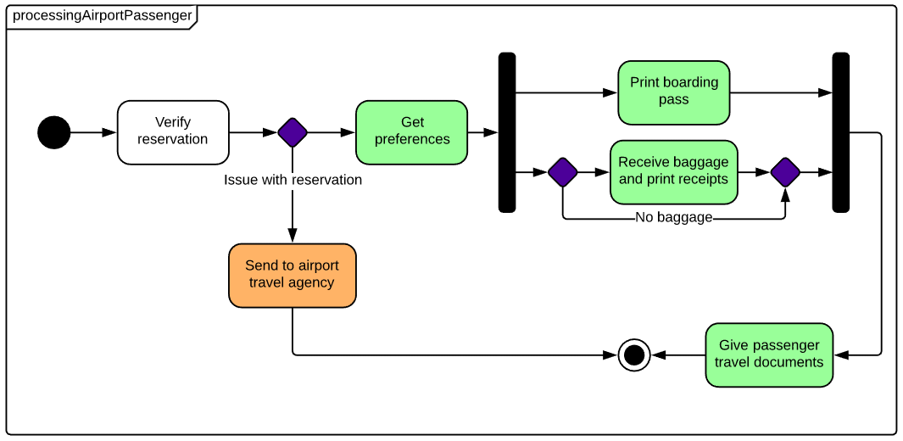

Ähnlich wie das Aktivitätsdiagramm
Als Zustandsautomat wird ein Gerät bezeichnet, das den Status eines Objekts zu einem bestimmten Zeitpunkt aufzeichnet und auf der Basis der jeweils empfangenen Eingaben Statusänderungen bzw. weitere Aktionen auslösen kann. Der Begriff „Zustand“ bezieht sich dabei nicht auf das Verhalten des betreffenden Objekts, sondern auf die unterschiedlichen Kombinationen der darin enthaltenen Informationen. Zum besseren Verständnis der unterschiedlichen Zustände kann es nützlich sein, sämtliche möglichen Zustände abzubilden und zu veranschaulichen, wie sie jeweils erreicht werden.
In Zustandsdiagrammen werden vor allem Zustände und Übergänge abgebildet. Zustände werden durch Rechtecke mit abgerundeten Ecken dargestellt, die mit dem Namen des Zustands beschriftet werden. Übergänge werden mit Pfeilen, die von einem Zustand zu einem anderen verlaufen, gekennzeichnet und geben die Zustandsveränderung an.
Link geht zu einer externen Seite
